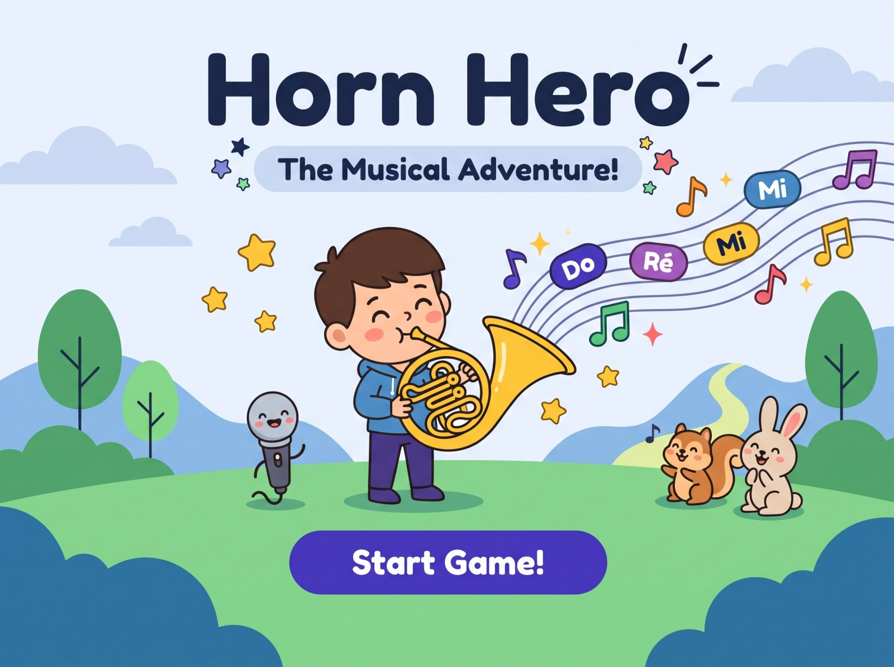

Practice
Pick one note and play it 10 times.
Hold the note steady for 3 seconds to score a point.

Horn Hero needs the microphone to hear your notes. Tap “Try again” and choose Allow.
If no question appears, open the browser's site settings (the lock icon next to the address) and allow the microphone.
Pick one note and play it 10 times.
Hold the note steady for 3 seconds to score a point.
Finish levels and collect stars.